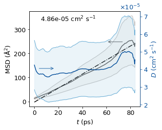

Mean Square Displacement and Diffusion Coefficient#
This notebook demonstrates how to compute the mean square displacement (MSD) of selected particles from a molecular dynamics trajectory and derive the self-diffusion coefficient D via the Einstein relation.
Theory — Einstein relation (3-D isotropic diffusion):
For anisotropic or 1-D diffusion replace the prefactor 6 with 2 (1-D) or 4 (2-D).
MSD estimator used (unbiased average over all time origins):
Computed efficiently via FFT using the algorithm of Calandrini et al. (2011).
Unit conversion (Ų → cm²/s):
Topics covered:
Loading trajectory and extracting centre-of-mass (CoM) coordinates of each water molecule
Computing per-molecule MSD using the FFT algorithm
Averaging over all molecules and computing the standard error
Fitting a linear model to extract D
Plotting MSD and D on a dual-axis figure
Import packages#
from fishmol import trj, msd
from cage_data import cage1_info
import numpy as np
import pandas as pd
import matplotlib.pyplot as plt
from fishmol import style
Import information of the simulated system#
# The simulation box
cell = cage1_info.cell
# Waters is a dict contains the indices of atoms of water molcules
waters = cage1_info.waters
water_indices = [[*water.values()] for water in waters]
print(water_indices)
[[14, 15, 16], [17, 18, 19], [143, 144, 145], [146, 147, 148], [272, 273, 274], [275, 276, 277], [401, 402, 403], [404, 405, 406]]
Read the Trajectory#
The full production trajectory is a large file (~517 MB for this system). Adjust the path to your own trajectory file.
Note on
cell: This trajectory is a raw NVT output that does not embedLattice=in its frame comment lines, so the triclinic box must be supplied via thecellargument. For NPT trajectories that do carry per-frameLattice=fields, omitcell— it will be read automatically from each frame.
%%time
# cell is a fallback: this NVT file has no Lattice= in frame comments
traj = trj.Trajectory(timestep = 5, data = "/nobackup/rhtp48/data_ana/fishmol_examples/cage_data/cage1-500K.xyz", index = ":", cell = cell)
CPU times: user 45.4 s, sys: 1.47 s, total: 46.9 s
Wall time: 47.1 s
You can retrieve and confirm the simulation cell info
traj.cell
[[21.2944, 0.0, 0.0],
[-4.6030371123, 20.7909480472, 0.0],
[-0.9719093466, -1.2106211379, 15.1054299403]]
A test of calc_com() function is working
traj.frames[0][water_indices[0]].calc_com()
array([10.58631557, 19.90213351, 10.38000923])
Compute Centre-of-Mass Trajectories for Each Water Molecule#
The diffusion coefficient is computed from the trajectory of the molecular centre of mass (CoM), not individual atoms. This filters out fast intramolecular vibrations and gives the translational diffusion of the molecule as a whole.
We store all CoM trajectories as a DataFrame with columns water{i}_x, water{i}_y, water{i}_z. This intermediate result is cached to an Excel file to avoid recomputing if the kernel is restarted.
from fishmol.utils import update_progress # import the progress bar function
water_coms = np.zeros((traj.nframes, 3*len(water_indices)))
for i, frame in enumerate(traj.frames):
# Calculate com
coms = [frame[water_idx].calc_com() for water_idx in water_indices]
water_coms[i] = np.asarray(coms).flatten()
update_progress(i/traj.nframes)
# Add data to dateframe
columns=[]
for i in range(1, len(water_indices) + 1):
columns += [f"water{i}_x", f"water{i}_y", f"water{i}_z"]
water_com_df = pd.DataFrame(columns=columns, data = water_coms)
# Write data to excel file
water_com_df.to_excel("test/cage1-500K-water-com.xlsx")
update_progress(1)
Progress: [■■■■■■■■■■■■■■■■■■■■] 100.0%
water_com_df.head()
| water1_x | water1_y | water1_z | water2_x | water2_y | water2_z | water3_x | water3_y | water3_z | water4_x | ... | water5_z | water6_x | water6_y | water6_z | water7_x | water7_y | water7_z | water8_x | water8_y | water8_z | |
|---|---|---|---|---|---|---|---|---|---|---|---|---|---|---|---|---|---|---|---|---|---|
| 0 | 10.586316 | 19.902134 | 10.380009 | 0.624155 | 10.923925 | 8.298079 | -1.967392 | 4.261146 | 12.241481 | 4.693672 | ... | 4.725172 | 15.090375 | 8.649502 | 6.883228 | 17.759366 | 15.321196 | 2.865725 | 11.019290 | 3.578953 | 0.703805 |
| 1 | 10.597616 | 19.945151 | 10.393126 | 0.617881 | 10.942585 | 8.312331 | -1.961926 | 4.253910 | 12.205821 | 4.689873 | ... | 4.745156 | 15.076014 | 8.640429 | 6.849210 | 17.749958 | 15.278667 | 2.889409 | 11.049146 | 3.587807 | 0.663123 |
| 2 | 10.610208 | 20.003821 | 10.408405 | 0.610859 | 10.967922 | 8.330438 | -1.953047 | 4.243309 | 12.156421 | 4.687198 | ... | 4.767198 | 15.058083 | 8.628816 | 6.804086 | 17.738720 | 15.225162 | 2.920655 | 11.086905 | 3.600664 | 0.608757 |
| 3 | 10.622718 | 20.062112 | 10.416761 | 0.604688 | 10.993416 | 8.349495 | -1.945208 | 4.229969 | 12.106099 | 4.687512 | ... | 4.786539 | 15.040753 | 8.617851 | 6.760128 | 17.728982 | 15.181476 | 2.948253 | 11.122864 | 3.614650 | 0.558271 |
| 4 | 10.636664 | 20.122749 | 10.416813 | 0.597829 | 11.020753 | 8.373153 | -1.941190 | 4.211549 | 12.054352 | 4.691621 | ... | 4.808036 | 15.020218 | 8.605213 | 6.714651 | 17.717884 | 15.151479 | 2.970079 | 11.155729 | 3.629731 | 0.511643 |
5 rows × 24 columns
del water_coms
Compute MSD and Instantaneous D#
msd.msd_fft(r) takes an (N_frames, 3) position array and returns the MSD for each lag time m = 0, 1, …, N−1. The algorithm runs in O(N log N) time using FFT-based autocorrelation (Wiener–Khinchin theorem) rather than the naive O(N²) double loop.
We also compute the instantaneous diffusion coefficient at each lag time using the Einstein relation:
This converges to the true D at long times. Plotting it alongside MSD makes it easy to identify the diffusive (linear) regime.
Create the time data#
start_idx = 0
t0 = start_idx * 5
t_end = t0 + 5*(len(water_com_df)-1) # 5 fs is the interval of traj
t = np.linspace(t0, t_end, num = len(water_com_df))
msd_d_df = pd.DataFrame()
msd_d_df["t"] = t[1:]
Calculate the MSD and D#
Define a function to calculate the mean squre displacements (MSDs).
The mean squared displacement (MSD) measures how much particles move over time. There are a number of definitions for the mean squared displacement. The MSDs here are calculated from the most common form, which is defined as: $\( MSD(m) = \frac{1}{N_{particles}} \sum_{i=1}^{N_{particles}} \frac{1}{N-m} \sum_{k=0}^{N-m-1} (\vec{r}_i(k+m) - \vec{r}_i(k))^2 \)\( where \)r_i(k)\( is the position of particle \)i\( in frame \)k\(. The mean squared displacement is averaged displacements over all windows of length \)m$. The algorithm used is described in calandrini2011nmoldyn which can be realised by the code in this StackOverflow thread.
for i in range(len(water_indices)):
temp = np.array(water_com_df.iloc[:, 3*i:3*i+3])
msds = msd.msd_fft(temp)
msd_d_df[f"water{i}_MSD"] = msds[1:]
# Einstein relation D = MSD / (6t); unit conversion: Ų/fs → cm²/s
# D[cm²/s] = MSD[Ų] × 1e-16[cm²/Ų] / (6 × t[fs] × 1e-15[s/fs])
msd_d_df[f"water{i}_D"] = msds[1:] * 1e-16 / (6 * t[1:] * 1e-15)
msd_df = msd_d_df.iloc[:, 1:16:2]
d_df = msd_d_df.iloc[:, 2:17:2]
Calculate average values of MSD and D#
msd_d_df["Mean_MSD"] = msd_df.mean(axis=1)
msd_d_df["MSD_error"] = msd_df.std(axis=1) / 8**0.5
msd_d_df["Mean_D"] = d_df.mean(axis=1)
msd_d_df["D_error"] = d_df.std(axis=1) / 8**0.5
# Save the data
msd_d_df.to_excel("test/cage1-H2O-MSD-D-500K.xlsx")
Plot MSD and D#
We skip the first 5 ps (1 000 frames at 5 fs/frame) of each MSD curve before fitting. At short lag times the particle is still in the ballistic regime (MSD ∝ t²); the linear Einstein regime (D plateau) is only reached after a characteristic relaxation time. Discarding the ballistic portion gives a more accurate linear fit.
The linear fit slope (Ų/ps) is converted to D (cm²/s):
because 1 Ų/ps = 10⁻¹⁶ cm² / 10⁻¹² s = 10⁻⁴ cm²/s, and the factor of 6 comes from 3-D diffusion.
# skip the first 5 ps, that the system is still equilibrating
msd_d_df = msd_d_df.iloc[1000:,:]
msd_d_df["t"] = (msd_d_df["t"] -5000)
msd_d_df.head()
| t | water0_MSD | water0_D | water1_MSD | water1_D | water2_MSD | water2_D | water3_MSD | water3_D | water4_MSD | ... | water5_MSD | water5_D | water6_MSD | water6_D | water7_MSD | water7_D | Mean_MSD | MSD_error | Mean_D | D_error | |
|---|---|---|---|---|---|---|---|---|---|---|---|---|---|---|---|---|---|---|---|---|---|
| 1000 | 5.0 | 4.093919 | 0.000014 | 19.722342 | 0.000066 | 2.003004 | 0.000007 | 33.566337 | 0.000112 | 1.458750 | ... | 19.347635 | 0.000064 | 2.614106 | 0.000009 | 19.172680 | 0.000064 | 12.747347 | 4.198995 | 0.000042 | 0.000014 |
| 1001 | 10.0 | 4.095739 | 0.000014 | 19.746275 | 0.000066 | 2.003836 | 0.000007 | 33.597794 | 0.000112 | 1.458538 | ... | 19.358398 | 0.000064 | 2.613060 | 0.000009 | 19.178147 | 0.000064 | 12.756473 | 4.202892 | 0.000042 | 0.000014 |
| 1002 | 15.0 | 4.097586 | 0.000014 | 19.770177 | 0.000066 | 2.004774 | 0.000007 | 33.629258 | 0.000112 | 1.458261 | ... | 19.369117 | 0.000064 | 2.612067 | 0.000009 | 19.183779 | 0.000064 | 12.765627 | 4.206788 | 0.000042 | 0.000014 |
| 1003 | 20.0 | 4.099463 | 0.000014 | 19.794038 | 0.000066 | 2.005816 | 0.000007 | 33.660730 | 0.000112 | 1.457916 | ... | 19.379795 | 0.000064 | 2.611117 | 0.000009 | 19.189575 | 0.000064 | 12.774806 | 4.210683 | 0.000042 | 0.000014 |
| 1004 | 25.0 | 4.101374 | 0.000014 | 19.817852 | 0.000066 | 2.006957 | 0.000007 | 33.692212 | 0.000112 | 1.457499 | ... | 19.390432 | 0.000064 | 2.610204 | 0.000009 | 19.195537 | 0.000064 | 12.784008 | 4.214578 | 0.000042 | 0.000014 |
5 rows × 21 columns
fig = plt.figure(figsize=(4.6,3.6))
ax = fig.add_axes([0.16, 0.16, 0.685, 0.75])
color = "#08519c"
ax.plot(msd_d_df["t"]/1000, msd_d_df["Mean_MSD"], color = "#525252")
ax.plot(msd_d_df["t"]/1000, msd_d_df["Mean_MSD"] - msd_d_df["MSD_error"], linewidth = 1, color = "#bdbdbd")
ax.plot(msd_d_df["t"]/1000, msd_d_df["Mean_MSD"] + msd_d_df["MSD_error"], linewidth = 1, color = "#bdbdbd")
ax.fill_between(msd_d_df["t"]/1000, msd_d_df["Mean_MSD"] + msd_d_df["MSD_error"], msd_d_df["Mean_MSD"] - msd_d_df["MSD_error"], color= "#d9d9d9", alpha = 0.2)
linear_model = np.polyfit(msd_d_df["t"]/1000, msd_d_df["Mean_MSD"],1)
linear_model_fn = np.poly1d(linear_model)
x_s = np.arange(msd_d_df["t"].min()/1000, msd_d_df["t"].max()/1000)
ax.plot(x_s,linear_model_fn(x_s), color="k", ls ="-.")
ax1 = ax.twinx()
ax1.plot(msd_d_df["t"]/1000, msd_d_df["Mean_D"], color = color)
ax1.plot(msd_d_df["t"]/1000, msd_d_df["Mean_D"] - msd_d_df["D_error"], linewidth = 1, color = "#6baed6")
ax1.plot(msd_d_df["t"]/1000, msd_d_df["Mean_D"] + msd_d_df["D_error"], linewidth = 1, color = "#6baed6")
ax1.fill_between(msd_d_df["t"]/1000, msd_d_df["Mean_D"] + msd_d_df["D_error"], msd_d_df["Mean_D"] - msd_d_df["D_error"], color = "#9ecae1", alpha = 0.2)
ax.annotate("", xy=(0.7, 0.68), xycoords = "axes fraction",
xytext=(0.85, 0.68), textcoords='axes fraction',
arrowprops=dict(arrowstyle="->", color = "#525252"))
ax.annotate("", xy=(0.23, 0.40), xycoords = "axes fraction",
xytext=(0.08, 0.40), textcoords='axes fraction',
arrowprops=dict(arrowstyle="->", color = color))
xmin, xmax = ax.get_xlim()
ymin, ymax = ax.get_ylim()
ax.text(xmin + 0.35*(xmax-xmin), ymin + 0.92*(ymax - ymin), "%.2e cm$^2$ s$^{-1}$"%(linear_model[0]/60000), ha = "center", va = "center")
ax.set_ylabel('MSD (Å$^2$)')
ax.set_xlabel('$t$ (ps)')
ax1.set_ylabel('$D$ (cm$^2$ s$^{-1}$)', color = color)
ax1.tick_params(axis='y', color = color, labelcolor = color)
ax1.spines['right'].set_color(color)
ax1.ticklabel_format(axis='y', style='sci', scilimits=[-4,4], useMathText=True)
plt.savefig("test/cage1-ave_msd-d-500K.jpg", dpi =600)
plt.show()
